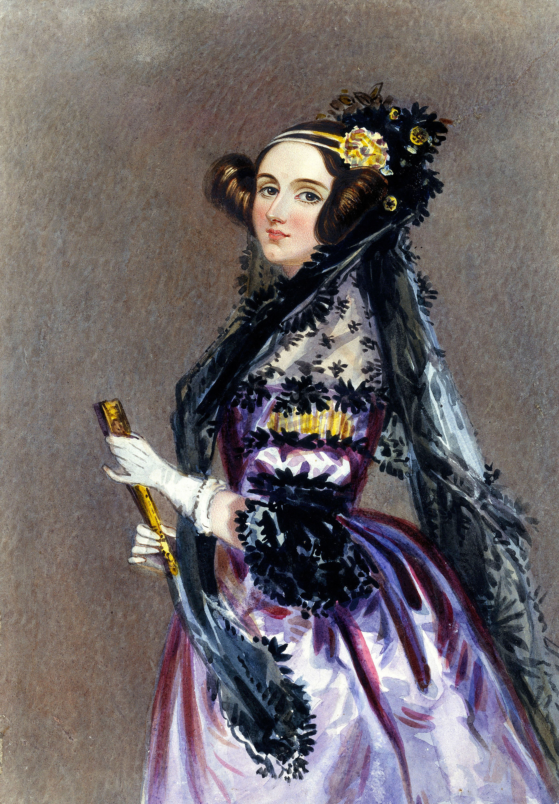

Code Em
Tech Em Studios
$whoami
✰ My name is Chris, or Mr. Chris, or alias Mr. Longhair
✰ I live in the city with my two cats, one fish, and little brother
✰ I've been working at Tech Em for 3 years! I spend my week teaching classes at the studio, and
at different
schools around Richmond. We also have some projects that we like to colloborate on, and work
remotely!
✰ I love learning about the Internet, computer security, and other places, people around the
world!
What is computing?
What is a computer?
Does a computer require electricity?
Tally Sticks
Tally Sticks

Can you take a guess at what people might of used these for?
We can call these a form of mechanical aid that helped people count before they actually had what we know today as computers!
Abacus

2700 BC - Present
The Chinese Bead Abacus
Pascal's Calculator

1642 - 1800s
The first Digital Mechanical Calculator
Invented by Thomas de Colmar in 1820
Who's this?
Ada Lovelace
The first computer programmer!
Computer Programmer?
Programming or Coding is the act of creating human readable computer instructions
1st Generation Computers: Electric Computers
The ENIAC, 1946, Electronic Numerical Integrator And Computer

17,468 vacuum tubes!!!
The ENIAC

Vacuum Tubes
2nd Generation Computers: Electric Computers

The IBM 1401, first made in 1959
10,000 transistors!
A Transistor!
Transistors are the building blocks of computers
At the most basic level, a transistor can act as a switch, and as an amplifier
Objective 1: Draw A Square
Can you write a list of instructions with the English language as to how you would tell someone else to draw a square?"